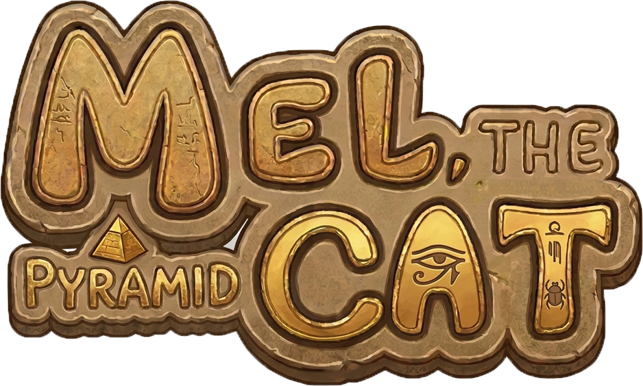
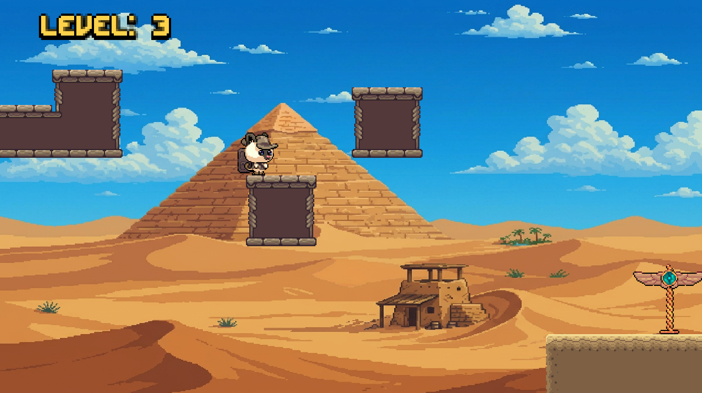

Mel The Pyramid Cat is a charming 2D pixel art platformer where players control Mel, a brave cat exploring ancient pyramids filled with traps, secrets, and mysterious corridors. As Mel ventures deeper into the ruins, he must avoid dangerous traps, navigate crumbling platforms, and outsmart Theo, a mischievous guardian dog patrolling the pyramid. But Theo is not the only threat — mysterious flying creatures lurk within the ancient halls, forcing Mel to stay alert and move quickly through the pyramid’s many dangers. With 40 levels of engaging platforming gameplay, Mel The Pyramid Cat offers a fun and challenging experience for players of all ages. Its retro-inspired visuals, precise controls, and ancient Egyptian atmosphere create a delightful adventure for platformer fans exploring forgotten tombs and hidden treasures.